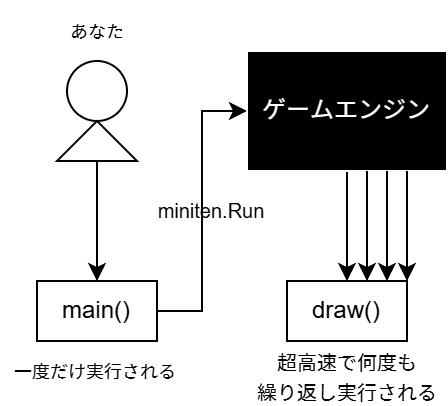

第九章 移动角色（帧和相关概念）
这次我们将学习游戏编程不可或缺的“帧”，顺便也要介绍“全局变量”。
9.1 让 gopher 君跳起来
我想让 gopher 君（关于 gopher 君的图片来源，请参见上一章）跳起来，写了一个“在鼠标点击时 gopher 君向上，松开时向下移动”的程序。
如果你觉得这个行为不太像跳跃，请期待下一章。
package main
import "github.com/eihigh/miniten"
var y = 0
func main() {
miniten.Run(draw)
}
func draw() {
if miniten.IsClicked() {
y -= 3
} else {
y += 3
}
miniten.DrawImage("gopher.png", 0, y)
}
顺便提一下，下面的程序， gopher 君无法运动。
package main
import "github.com/eihigh/miniten"
func main() {
miniten.Run(draw)
}
func draw() {
y := 0 // 就是这里
if miniten.IsClicked() {
y -= 3
} else {
y += 3
}
miniten.DrawImage("gopher.png", 0, y)
}
要了解两者的区别，首先需要理解什么是“帧”。
9.2 随处可见的视频，其实是翻页漫画
所有的视频，都是高速切换的静止图像的集合。
小时候闲着没事，在笔记本角落绘制的范爷漫画，快速翻页时看起来像在运动。
所谓的视频，原理与翻页漫画完全相同。视频中，一张张静止图像被称为帧，单位时间内的帧的数量称为帧率。帧率的单位是 FPS（每秒帧数）。帧率越高，视频看起来越流畅。
游戏画面看起来在动，原理也是一样的。令人惊讶的是，大多数游戏**每次切换帧时，都会从零开始重新绘制屏幕上的所有内容。**如果“帧率”是 60FPS，那么每帧的绘制时间仅为 1/60 秒 = 0.016 秒。如果无法在时间内完成绘制，就会导致画面闪烁，动作卡顿，这就是所谓的“掉帧”。
游戏图形学，基本上就是研究如何在帧的限制时间内，尽可能多绘制的学问。大家在玩游戏时，可以联想一下这个知识。
9.3 draw（绘图）函数

miniten 里面，draw 函数在每一帧会被调用一次。
每次切换新的帧时，游戏引擎会准备一个全新的空白帧，并调用 draw 函数进行绘制。
然后，在切换到下一帧时，前一帧的内容会被丢弃，新的帧画面会被渲染，就这么循环往复。
draw 函数，负责在限制时间内完成帧的绘制，因此写在 draw 函数中的处理不应耗时过长。这会导致掉帧和帧率下降。
要感受帧的速度，可以在 draw 函数中执行 fmt 的 fmt.Println 。这个程序，会在每一帧中在终端显示“帧”。
下面的程序。可以看到“帧”以相当快的速度不断显示。
package main
import (
"fmt"
"github.com/eihigh/miniten"
)
func main() {
miniten.Run(draw)
}
func draw() {
fmt.Println("帧")
}
$ go run .
帧
帧
帧
帧
帧
帧
miniten.Run(draw) 会在窗口关闭前逐帧调用 draw 函数。当窗口关闭时， miniten.Run(draw) 被结束，draw 函数不再被调用。
与draw函数相反，main 函数每次程序启动时只执行一次。
以下程序在启动时会显示一次“启动”，关闭窗口，并结束 miniten.Run(draw) 时会显示一次“结束”。
package main
import (
"fmt"
"github.com/eihigh/miniten"
)
func main() {
fmt.Println("启动")
miniten.Run(draw)
fmt.Println("结束")
}
func draw() {
}
超高速地绘制帧，是游戏编程的重要特征。其他领域的程序员，意外地有很多人并不知道这一点，所以请务必记住。
9.4 全局变量
还有一个没有解释的内容，就是在函数外部声明的全局变量。
和函数中的变量（与全局变量相对，叫局部变量）一样，全局变量的声明和赋值，可以同时进行。
不过，由于语法上的限制，全局变量无法使用 := 符号，需要使用 var 关键字声明。
全局变量的声明・赋值・使用规则：
package main
import "fmt"
var x = 42 // 全局变量需要使用 var 这个关键字来声明
func main() {
fmt.Println(x) // 42
}
局部变量在作用域（如函数等）结束时会消失。
全局变量从程序启动到结束，会一直存在。
以下的程序，在程序启动时将 x 赋值为 0，并在每一帧中加 1。由于 x 不会消失，因此会持续加 1。
结果就是程序绘制的 gopher 君的整体坐标向右移，看起来gopher 君就像正在向右移动。
package main
import "github.com/eihigh/miniten"
var x = 0 // 启动时赋值为 0
func main() {
miniten.Run(draw)
}
func draw() {
x += 1 // 帧数加 1
miniten.DrawImage("gopher.png", x, 0)
}
相反，以下的程序中， x 在函数内部声明，因此每个帧里的 x 会消失。
然后进入另一帧的时候， x 会从 0 重新开始。这种情况下，gopher 君无法移动。
package main
import "github.com/eihigh/miniten"
func main() {
miniten.Run(draw)
}
func draw() {
x := 0
x += 1
miniten.DrawImage("gopher.png", x, 0) // x一直是1
// draw函数执行完以后，x 也会失效
}
补充内容：draw 函数的调用频率
在 miniten 中调用 draw 函数（以及在 Ebitengine 中的 Draw 函数）的频率，实际上是由你使用的显示器决定。
显示器每秒更新屏幕的次数称为刷新率，单位是 Hz（赫兹）。大多数显示器的刷新率为 60Hz，也就是说每秒更新 60 次屏幕，近年来所谓的电竞显示器，也有达到 120Hz 或 144Hz 等的高刷新率产品。
游戏生成帧的速度，如果与显示器更新频率不同，会导致前后帧的内容，混在一起显示在屏幕上，这被称为画面撕裂。
为了防止撕裂，有一种叫做“垂直同步”的技术，会根据屏幕的刷新率生成帧。miniten（以及Ebitengine）默认启用垂直同步，因此会根据刷新率生成帧。因此，如果使用高刷新率显示器，draw 函数也会被更频繁地调用。
这个做法，在防止撕裂方面很有用，但由于显示器的处理速度不同，会导致额外的问题。上述的gopher 君，在高刷新率屏幕里下移动的速度会更快。
这样一来，会导致做游戏变困难。因此， Ebitengine 中有一个固定每秒调用 60 次的 Update 函数，它和 Draw 函数不一样，不依赖于屏幕刷新率。
具体细节将在后面的文章中提到，正是因为这个设计，使得游戏的制作更容易，同时也防止了画面撕裂现象。
本章总结
- 帧是构成视频的一张又一张静止图像。
- 帧率 (FPS) ，指每秒可以显示多少帧。
- draw 函数在每一帧中被调用。
- 全局变量，在程序启动到结束的期间内，一直有效。